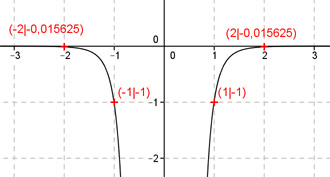

Aufgabe 46 Ergänzen Sie die Wertetabelle für den Graphen: y = - x-6 x 2 oder -2 1 oder -1 y -0,015625 -1 f(x) = - 0,015625 eingesetzt: -0,015625 = -x-6 |*(-1) 0,015625 = x-6 1 0,015625 = ---- | *x6 x6 0,015625 * x6 = 1 |:0,015625 1 x6 = ----------- = 64 0,015625  x = = 2 oder -2 -1 = -x-6 |*(-1) 1 = x-6 1 1 = ---- |*x6 x6 x6 = 1 x = = 1 oder -1